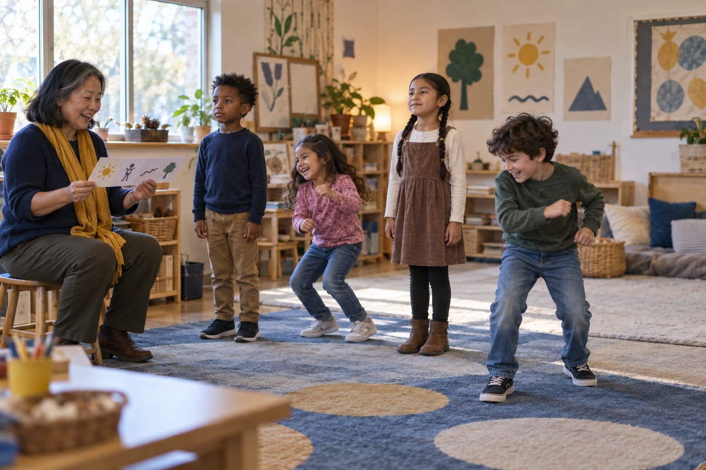

Student learning · Grades K–2 · 30 minutes
Real, Pretend, or Changed?
Young detectives move, wiggle, or freeze to decide whether a picture or story is real, pretend on purpose, or changed to look real, and learn to ask a grown-up when they can't tell.
Pretend is wonderful. Stories, cartoons, and drawings are made up on purpose, and everyone knows it. The tricky kind is a picture that has been changed, or made by a computer, so it looks real. In this game, you describe pictures and stories aloud, and children stand tall for Real, wiggle for Pretend, or freeze like a statue for Changed. They practice three detective questions and learn the most important move of all: when you can't tell by looking, ask a grown-up and check.
In this packet
- Handout A: Real, Pretend, or Changed? (card sort)
- Handout B: Clue Detective Checklist (checklist)
- Handout C: My Detective Page (worksheet)
- Facilitator key (last page)
TCEA ELE indicators
- S2.2 I can identify trustworthy sources of information on the internet.
- AI4.1 I know how to promote critical thinking skills in relation to AI-generated information.
- S3.2 I can communicate my ideas clearly to others.
- AI1.3 I am aware of the current limitations and potential biases in AI systems.
Full facilitator guide: mglearn.github.io/eles/activities/real-pretend-or-changed.html
Handout A for Real, Pretend, or Changed?
Real, Pretend, or Changed?
Teacher: read each strip aloud. Children show the pose. Tape the strip under the sign.
REAL
PRETEND
CHANGED
Handout A for Real, Pretend, or Changed?
Real, Pretend, or Changed?: cards to sort
Cut apart the strips. Sort each one onto the mat and be ready to explain why.
A photo of a giraffe at the zoo, eating leaves from a tall tree.
A storybook page: a bear rides a bicycle to the library.
A photo of a dog as tall as a house, standing next to a car.
A photo of our school playground with snow on the slide. Our teacher took it last winter.
A cartoon about a pumpkin that tells jokes.
A photo of a family picnic, but the sky is purple and there are two suns.
A drawing a classmate made of a unicorn.
A video of firefighters spraying water on a fire, from a TV news show.
A picture that looks just like a real photo: a fish riding a skateboard.
A photo of the moon at night, taken from a backyard.
A photo of a boy standing next to a lion in his kitchen.
A puppet show where a sock puppet sings a song.
Handout B for Real, Pretend, or Changed?
Clue Detective Checklist
Use these questions like a detective. Check each one you asked.
| Yes | Not yet | |
|---|---|---|
| I asked: Could this really happen? | ||
| I asked: Who made it? | ||
| I asked: Is it pretend on purpose, like a story or cartoon? | ||
| I looked: Does something look strange or not quite right? | ||
| I remembered: A computer can make pictures that look real. | ||
| I asked a grown-up to help me check. |
Notes
Handout C for Real, Pretend, or Changed?
My Detective Page
Draw in each box. Your teacher can help with words.
Draw something REAL.
Draw something PRETEND.
Draw a picture that could be CHANGED to trick someone.
If I can't tell, I will ask: ___
Facilitator only for Real, Pretend, or Changed?
Answer key and notes
Handout A: Real, Pretend, or Changed?
| Item | Sort | Why |
|---|---|---|
| A photo of a giraffe at the zoo, eating leaves from a tall tree. | REAL | Giraffes really eat leaves from tall trees. Nothing looks strange. |
| A storybook page: a bear rides a bicycle to the library. | PRETEND | A storybook is made up on purpose. That's OK! |
| A photo of a dog as tall as a house, standing next to a car. | CHANGED | Dogs can't be that big, but it looks like a real photo. |
| A photo of our school playground with snow on the slide. Our teacher took it last winter. | REAL | We know who made it and it could really happen. |
| A cartoon about a pumpkin that tells jokes. | PRETEND | Cartoons are pretend on purpose. |
| A photo of a family picnic, but the sky is purple and there are two suns. | CHANGED | Our sky has one sun. Someone changed it or a computer made it. |
| A drawing a classmate made of a unicorn. | PRETEND | Unicorns are pretend, and a drawing isn't trying to trick us. |
| A video of firefighters spraying water on a fire, from a TV news show. | REAL | Firefighters really do this, and news shows tell us who made the video. |
| A picture that looks just like a real photo: a fish riding a skateboard. | CHANGED | Fish can't skateboard. It looks real, so it was changed or computer-made. |
| A photo of the moon at night, taken from a backyard. | REAL | You can see the moon from your backyard. |
| A photo of a boy standing next to a lion in his kitchen. | CHANGED | Lions don't live in kitchens. If you're not sure, ask a grown-up. |
| A puppet show where a sock puppet sings a song. | PRETEND | Everyone knows it's a puppet. It's pretend on purpose. |